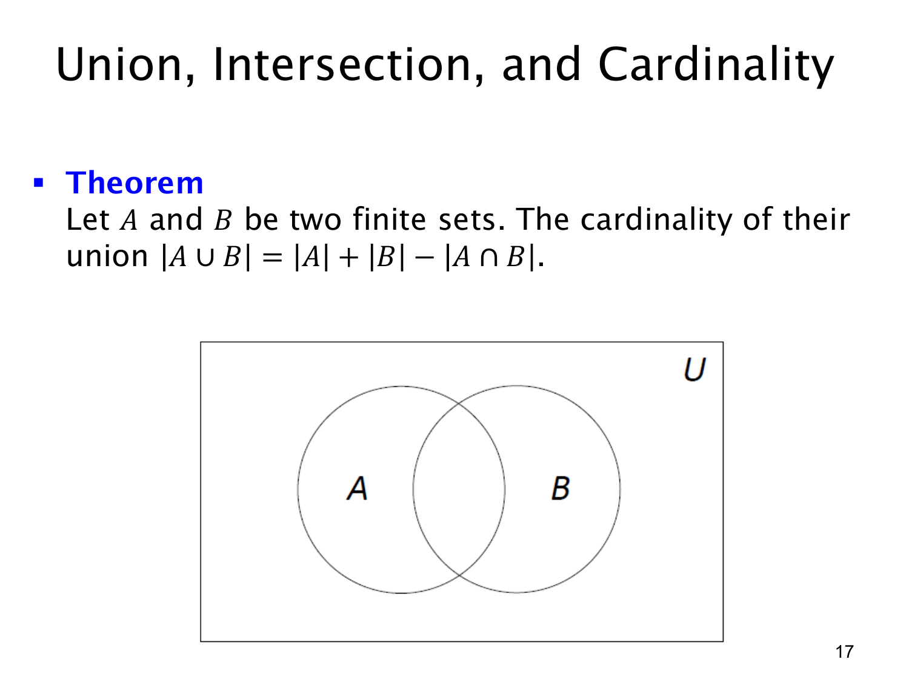

L1.4 · 第 17 页讲解原文
查看这一页课件

两个有限集合的容斥公式
对于两个有限集合 A,B，本页给出并集的基数公式：
∣A∪B∣=∣A∣+∣B∣−∣A∩B∣.
为什么要减去交集？直接相加 ∣A∣+∣B∣ 时，只属于 A 的元素计一次，只属于 B 的元素也计一次；但同时属于两者的每个元素被计了两次。并集里它们应只算一次，所以要减去一次 ∣A∩B∣。课件下方的文氏图中，两圆重叠的区域就是被重复计数的部分。
例如 A={1,2,3}、B={3,4}，有 ∣A∣=3、∣B∣=2、∣A∩B∣=1，因此 ∣A∪B∣=3+2−1=4，与 A∪B={1,2,3,4} 一致。
若 A,B 不相交，交集为空，公式化为 ∣A∪B∣=∣A∣+∣B∣。反过来，只要有重叠，就不能简单相加。课件特别限制 A,B 为有限集合，此处的等式按普通有限整数计数理解；讨论无限集合大小时不能直接照搬这一减法算式。